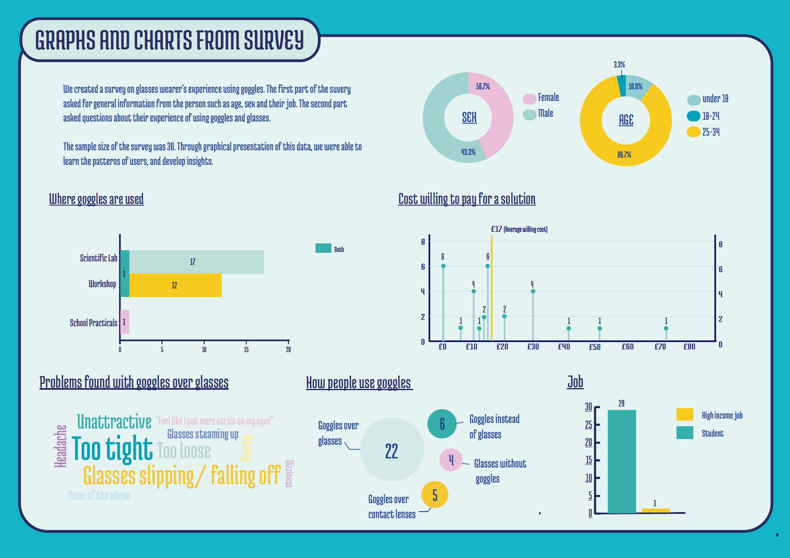
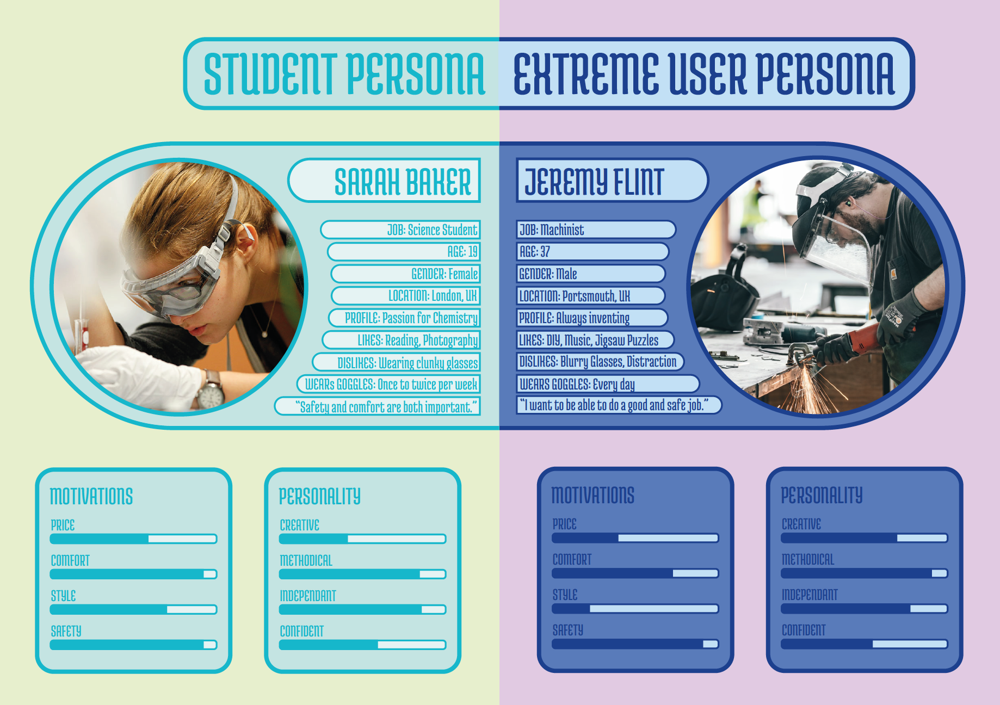
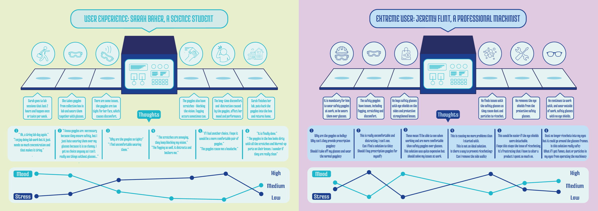
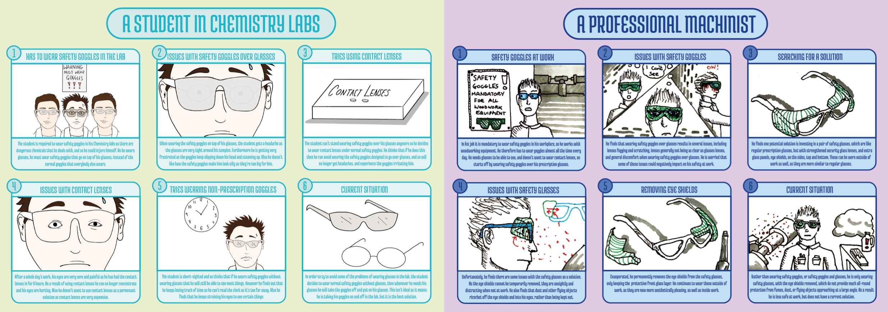
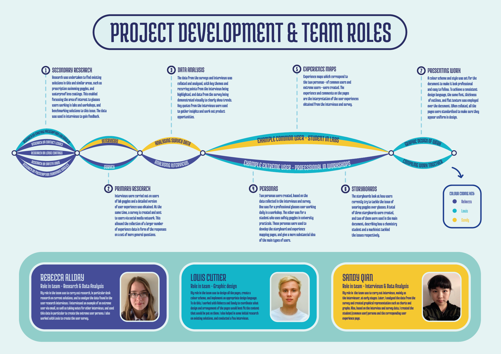
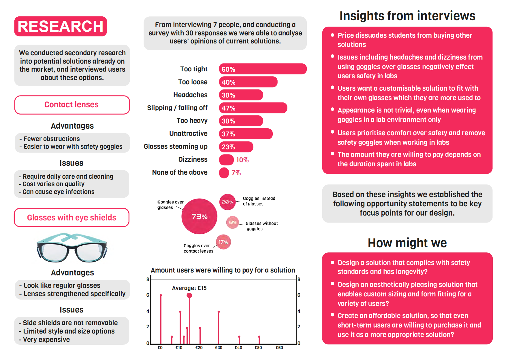
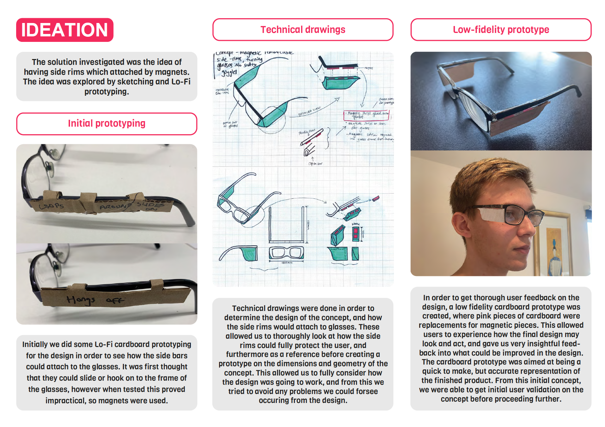
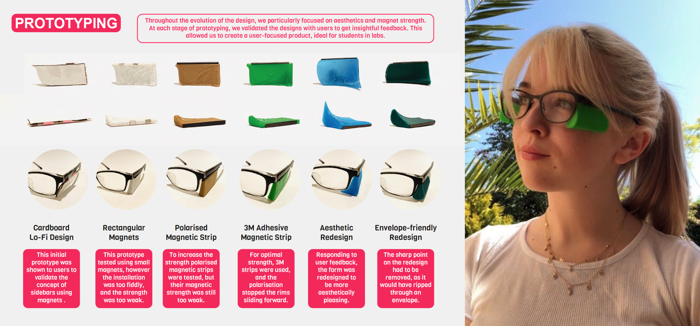
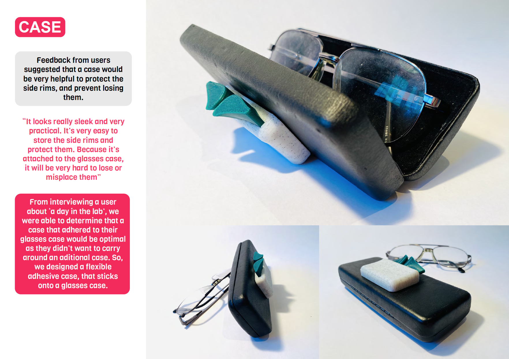
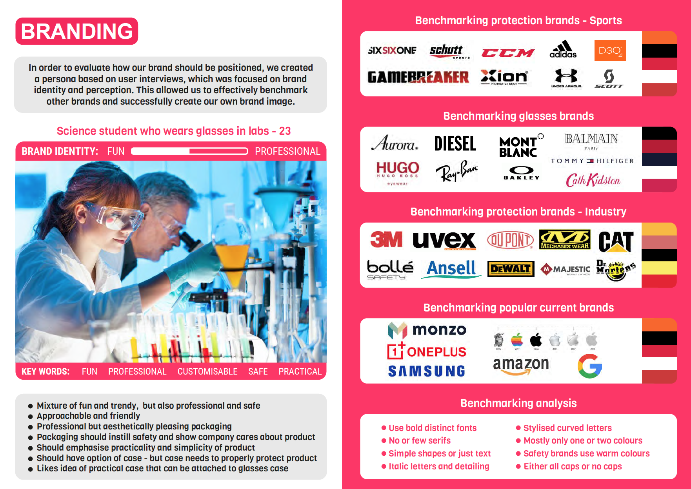

Skydda enables glasses-wearing students to work in labs and workshops without having to face the
issues
presented by wearing safety goggles over their glasses. Our solution uses magnets to attach protective “side
rims” quickly and easily to their glasses.
“It’s lightweight, comfortable and easy to use, much less of a
hassle than oversized lab goggles.”
Concept
Our kit consists of two custom 3D-printed side rims, three pairs of differently sized magnets, and foam
strips
of two different thicknesses. The side rims are designed parametrically from data submitted by the user to
ensure an optimal fit to the user’s glasses. The foam strips can be used to fill in any small gaps between
the
glasses and the side rims for added safety. These kits are sent to users, along with a simple step-by-step
guide
to set up the side rims for use with their usual prescription glasses. The side rims can then be quickly
secured
in place on the glasses magnetically, whenever they are required for work in laboratories and workshops. The
side rims are lightweight, stylish and comfortable, and can easily be transported in a case, attached to the
user’s glasses case.
Promotional Video
To succesfully market our product, and explain how it works to the general public we made a promotional
video.
Initial User Research
Initially, to explore the user group of students in labs, we conducted a survey of 30 people, and numerous
in depth interviews were carried out. This was done
to inform us of the problems faced by students, as well as giving us general information about the
demographic such that we would be able to ideate.

Personas
With all of the information about our demographic, two personas were made. It was clear there was a split
amongst the users. The two groups identified were students in labs (as seen on the left), and professionals
(as seen on the right). The personas allowed us to collate all the research we had conducted and create a
product with a specific requirement.

User Journeys
User journeys were created for each of the user groups in order to identify problems, thoughts and emotions
at each stage of an ordinary day using lab goggles.

User Scenario
Two user scenarios were created to explore spefic problems experienced with the existing solutions.

Team Roles
As this was a group project, the infographic below was created to clearly show how each memeber contributed
to the team.

Secondary User Research
At this stage, further research was conducted with users as we now felt we had found specific problems that
we wanted to address, so feedback on this from users along with targeted questions proved very useful.

Ideation
With all our research having been performed, low fidelity prototypes were created as a proof of concept to
test whether ideas were worth pursuing.

Prototyping
Further in depth prototyping involving 3D printing and user testing was carried out in order to get feedback
along each stage as the idea was developed.

Case Design
A lot of feedback from users suggested a case would complement the product, and so a case was designed for
the side rims.

Branding
To market the product, intensive research was performed on similar brands to look at how we should brand our
own products.

Logo Design
Based on the branding benchmarking performed, a logo was designed, with each element being thoroughly
considered to coincide with the brand ideology.